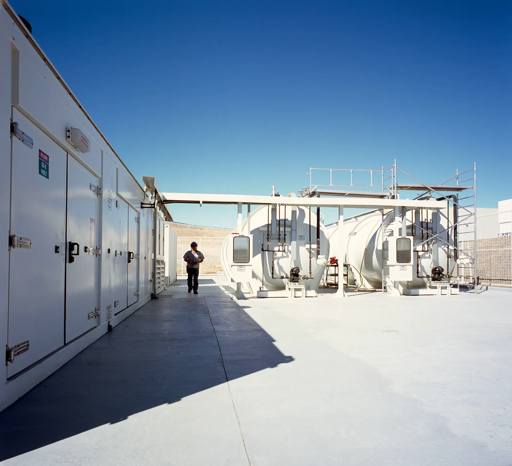
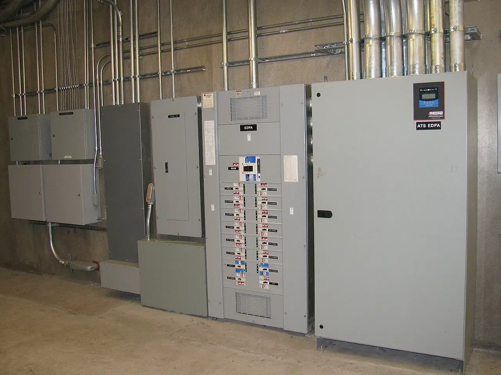

Дизельні генератори 30–200 кВт
Сім моделей EDON на складі, від 320 000 ₴. Доставка по Україні, запуск на об’єкті й навчання персоналу входять у ціну.
Генератори EDON 50–200 кВт з АВР. Усі шість моделей на складі.


АВР у комплекті від 50 кВт
Блок автоматичного вводу резерву стежить за мережею. Зникла напруга, і АВР запускає генератор та перемикає на нього об’єкт. Повернулася мережа: навантаження йде назад, двигун глушиться.
- Окремо платити за автозапуск не треба
- Підключаємо лише через АВР або перекидний рубильник: пряме підключення до вводу небезпечне для бригад на лінії

Генератор 30 кВт для будмайданчика
EDON GJ-30GF стоїть на відкритій рамі: бетонозмішувач, зварювання, насоси, зерносушарка. Тихохідний дизель на 1500 об/хв розрахований на цілу зміну під навантаженням.
- Ціна з доставкою і запуском320 000 ₴
- ДвигунYCD4V22DA-55
- Габарити1600 × 600 × 1000 мм
Машина гучна, тому біля житла ставте її в окреме приміщення. АВР до цієї моделі підбираємо окремо.
Сім моделей у одній таблиці. Ціни включають доставку, запуск і рік гарантії.
| Модель | Потужність | Двигун | Пальне | Вага | АВР | Ціна |
|---|---|---|---|---|---|---|
| EDON GJ-30GF, 30 кВт | 30 кВт / 37,5 кВА | 4 циліндри | до 240 г/кВт·год | 500 кг | окремо | 320 000 ₴ |
| EDON 50 кВт, відкрита рама | 50 кВт / 62,5 кВА | 4 циліндри | 11,5 л/год | 650 кг | у комплекті | 450 000 ₴ |
| EDON 50 кВт у кожусі | 50 кВт / 62,5 кВА | 4 циліндри | 11,5 л/год | 750 кг | у комплекті | 575 000 ₴ |
| EDON 100 кВт, відкрита рама | 100 кВт / 125 кВА | 6 циліндри | 22,9 л/год | 900 кг | у комплекті | 699 000 ₴ |
| EDON 100 кВт у кожусі | 100 кВт / 125 кВА | 6 циліндри | 22,9 л/год | 950 кг | у комплекті | 929 000 ₴ |
| EDON 150 кВт, відкрита рама | 150 кВт / 187,5 кВА | 6 циліндри | 34,4 л/год | 1500 кг | у комплекті | 949 000 ₴ |
| EDON 200 кВт, відкрита рама | 200 кВт / 250 кВА | 6 циліндри | 45,9 л/год | 1650 кг | у комплекті | 1 239 000 ₴ |
Доставка по Україні безкоштовна
- Привозимо до вашого об’єкта
Вантажним авто в будь-яку область. Для розвантаження потрібен навантажувач або маніпулятор: машини важать від 500 до 1650 кг.
- Запускаємо на місці
Фахівець перевіряє майданчик, вихлоп і підключення, заводить генератор і дає йому навантаження.
- Навчаємо персонал
Показуємо, як запускати й глушити станцію, як пройти обкатку 50 мотогодин і щомісяця перевіряти її під навантаженням.

Питання перед покупкою
Те, що покупці запитують у нас найчастіше. Решту менеджер розповість телефоном.
Як оплатити генератор?
Готівкою нашому фахівцю під час запуску на об’єкті або безготівково за рахунком. Для ФОП, ТОВ і бюджетних установ готуємо повний пакет документів.
Що підготувати до приїзду машини?
Рівний бетонний майданчик або фундамент, вивід вихлопу назовні й приплив повітря до радіатора. Перелік оливи, антифризу й акумулятора надішлемо після замовлення.
Кожух чи відкрита рама?
Кожух знижує шум до 75 дБ у моделі на 100 кВт і закриває машину від дощу. Відкрита рама дешевша на 125 000–230 000 ₴ і підходить для окремого приміщення.
Як підібрати потужність?
Складіть потужність обладнання, що працює одночасно, і додайте 20–30% запасу. Назвіть менеджеру перелік, і ми порахуємо пускові струми безкоштовно.
Яка гарантія?
Один рік на кожен генератор. Гарантійний ремонт, сервіс і запчастини беремо на себе.
Замовлення генератора
Залиште номер телефону. Менеджер передзвонить, розпитає про обладнання на об’єкті й порахує потрібну потужність до оплати.
- Менеджер передзвонює й рахує потужність
- Погоджуємо модель, ціну й дату доставки
- Привозимо, запускаємо, приймаємо оплату